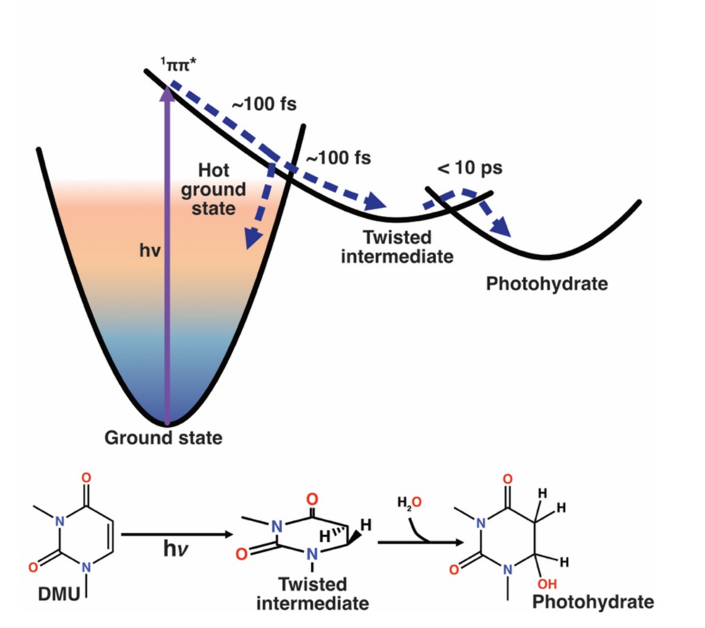

        <section>
          <h3 style="margin: 0 0 0.4em;">Hypothesis: Ground-State Reaction via a Twisted Intermediate</h3>
          <div style="display: flex; gap: 1.0em; align-items: center;">
            
            <div style="flex: 1.2; font-size: 0.40em;">
              <div class="col-box" style="border: 2px solid #1565C0; border-radius: 8px; padding: 0.7em 0.9em; background: #f5f8ff;">
                <ul style="margin: 0; padding-left: 1.2em;">
                  <li>$^1\pi\pi^*$ &rarr; hot ground state (~100 fs) &rarr; twisted intermediate (&lt;10 ps) &rarr; photohydrate</li>
                  <li>Photoproduct forms on the ground state, not from $^1\pi\pi^*$ directly</li>
                </ul>
              </div>
            </div>
          </div>
          <p class="slide-footnote"><a href="https://doi.org/10.1021/acs.jpclett.5c04072">Godínez Castellanos <em>et al.</em>, <em>J. Phys. Chem. Lett.</em> <strong>17</strong>, 2634&ndash;2643 (2026)</a></p>
          <aside class="notes">
            <ul>
              <li>This is the proposed mechanism, consistent with gas-phase calculations (Park et al., JPCL 2022) and very recent (2025) time-resolved IR/UV work on uracil/thymine (Obara et al.; Mathew et al.) invoking the same twisted intermediate.</li>
              <li>The next slide shows the kinetic evidence that confirms it — direct, simultaneous observation of excited-state decay, twisted-intermediate rise/decay, and the small long-lived photohydrate signal, only possible with a probe spanning the full 2.1-5.5 eV range in one measurement.</li>
              <li>Broader message: this resolves a decades-old debate on pyrimidine photohydration mechanism (excited-state vs. ground-state reaction), and opens up similar mechanistic questions for other deep-UV-absorbing photoproducts.</li>
            </ul>
          </aside>
        </section>
